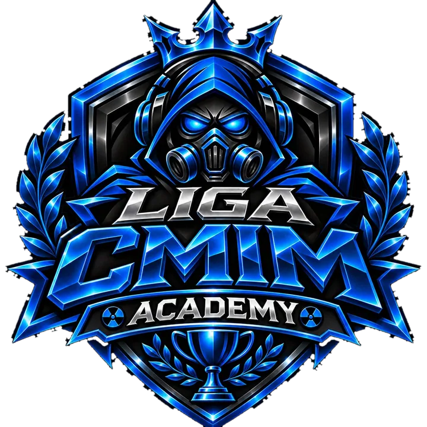
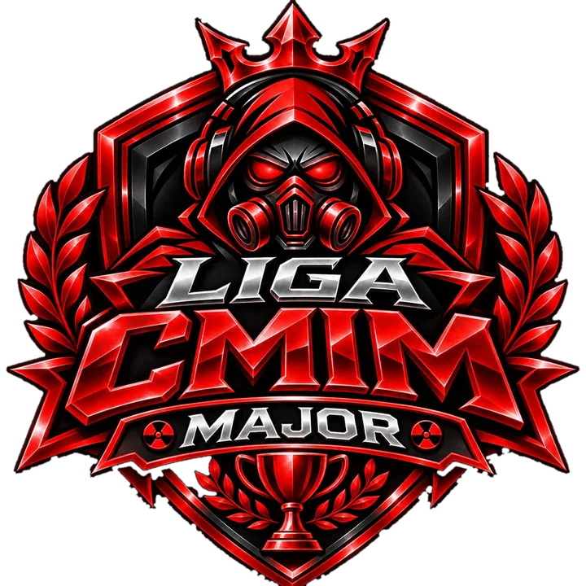

CMIM OPEN
A porta de entrada do circuito, criada para dar visibilidade a equipes interessadas em competir no CMIM.
CATEGORIA DE ENTRADA · REGULAMENTO V1.3
Open, Academy e Major: o universo das competições de equipes do CMIM. Crie seu time, reúna cinco jogadores, participe dos eventos oficiais e acompanhe tabelas, rodadas e chaveamentos no mesmo ambiente.
O cenário competitivo do CMIM reúne três ligas com identidades próprias. Diferente do in-house, aqui os times se inscrevem e disputam as competições de equipes.
A porta de entrada do circuito, criada para dar visibilidade a equipes interessadas em competir no CMIM.

A liga de desenvolvimento para equipes em evolução, com foco em constância, treino e crescimento competitivo.

O palco principal do circuito, voltado às competições de maior destaque do CMIM.
Competições publicadas pela organização. Consulte o status de inscrição, o calendário e os formatos definidos para cada evento.
Confrontos oficiais das competições cadastradas. Sem datas fictícias: horários só são apresentados quando a organização publica.
Escolha um evento para explorar confrontos por rodada, placares, ranking de equipes e resultados homologados.
Selecione um campeonato para ver os jogos e o formato da disputa.